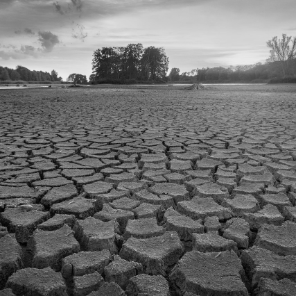
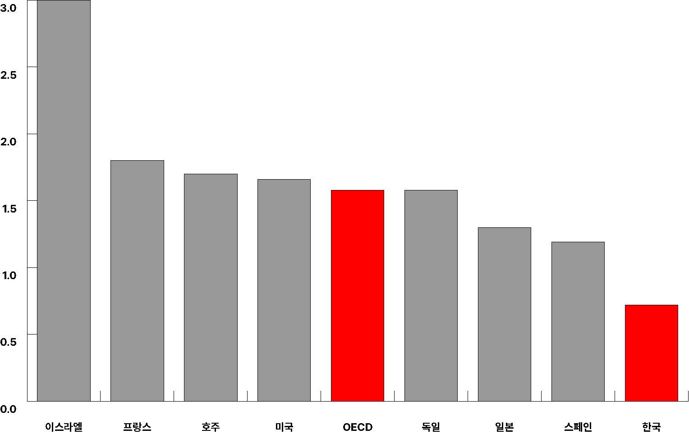
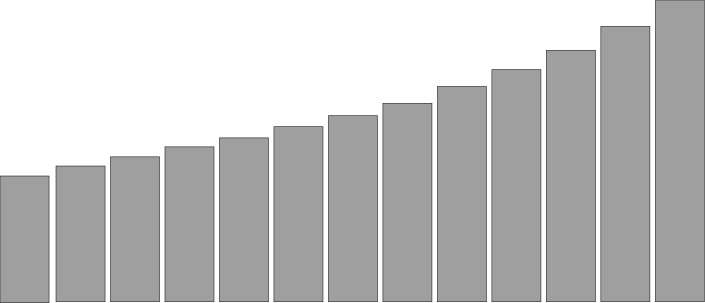
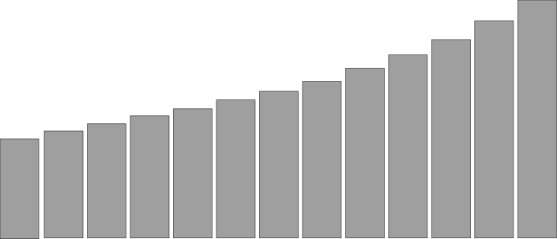

OECD 출산율
대한민국의 2023년 합계출산율은
0.72
명으로 OECD 평균인 1.58명의 절반에도 미치지 못하며, 2013년 이후 11년
연속 OECD 최저를 기록 중입니다. 출산율이 낮은 스페인(1.19명),
이탈리아(1.24명)와도 큰 격차를 보이며, 프랑스(1.83명), 스웨덴(1.67명)
등은 육아 지원 정책과 성평등 문화를 통해 상대적으로 높은 출산율을
유지합니다. 한국의 저출산 문제는 경제 성장 둔화, 노동력 부족, 고령화
가속 등의 심각한 영향을 초래하고 있습니다.
원인
성별 불평등, 경력 단절, 육아 부담 등 사회적 구조가 저출산에 영향을 미치며,
결혼·출산 가치관 변화도 원인입니다.
출산 장려 정책은 단기적 효과에 그치며, 국공립 보육 시설 부족, 낮은 육아휴직
수당 등으로 부모 부담을 충분히 줄이지 못합니다
한국의 저출산은 높은 주거비, 양육비, 사교육비와 같은 경제적 부담과 고용
불안정, 낮은 임금 등이 주요 원인으로 작용합니다.

Children are our hope and joy
- Nelson Mandela
한국의 출산율 근황
한국은 현재 세계에서 가장 낮은 출산율을 기록하며 심각한 저출산 문제에 직면해
있습니다. 이는 단순히 인구 감소에 그치지 않고, 경제와 사회 구조 전반에 걸쳐
깊은 영향을 미치고 있습니다. 결혼과 출산이 개인의 선택으로 자리 잡은 현대
사회에서, 저출산 문제는 우리 모두가 함께 고민해야 할 중요한 과제가 되고
있습니다.
2024년 1분기(1~3월) 합계출산율
0.76
명
1분기 기준 역대 최저치
2023년 한국의 합계출산율은
0.72
명
으로
OECD 회원국 중 최하위
OECD 평균인 1.58명의 절반에도 못 미치는 수치
OECD 회원국 중 합계출산율이 1명이 채 안 되는
유일한 국가
2021년 198개국 중 꼴찌인
198위
합계 출산율
대한민국의 합계출산율은 2023년 기준 0.72명으로,
세계 최저 수준
을 기록합니다. 인구를 유지하는 대체출산율(2.1명)과 큰 격차를 보이며,
저출산 문제는 고령화, 노동력 감소, 경제 둔화 등의 심각한 사회적 영향을
미치고 있습니다. 2024년에는 출산율이 0.68명 으로 더 하락할 전망입니다.
0.72

2023
2022
2021
2020
2019
2016
2015
2014
2013
2012
2017
2018
프랑스
호주
OECD
독일
일본
스페인
한국
미국
OECD 국가들 중
최저
이스라엘

 

181.2
전체 인구의 19.2%
2024 고령화 지수
문제점
고령화
한국의 저출산은 출생아 수 감소로 젊은 인구가 줄어드는 동시에, 기존
인구가 고령화되며 65세 이상 인구 비중이 급증하고 있습니다. 이는 생산
가능 인구 감소로
노동력 부족
을 초래하고, 연금 및 복지 재정의 부담을 가중시킵니다. 특히 저출산과
고령화는 경제 성장 둔화, 지역 소멸 위기 등 사회 전반에 심각한 영향을
미치고 있습니다. 이 두 문제는 서로 얽혀 있으며, 국가의 지속 가능성을
위협하는 중대한 과제로 꼽힙니다.
문제점
경쟁력 약화
저출산으로 학생 수가 급감하면서 초·중·고등학교는 물론 지방 대학의 구조조정과
폐교가 늘어나고 있습니다. 이는 교육 격차를 심화시키고, 지역 사회의 쇠퇴로
이어집니다. 또한, 젊은 인재 감소는 국가의 혁신과 기술 개발에 부정적 영향을
미치며, 창업과 산업 경쟁력 약화를 초래합니다. 이러한 문제는 장기적으로
한국의 경제 성장과 국제 경쟁력을 약화시키는 주요 원인으로 작용할 것입니다.
현재

10.6%
유소년 인구